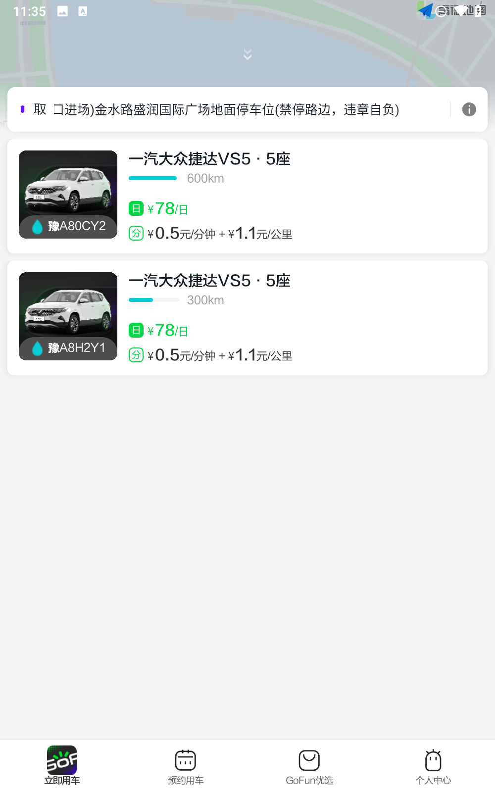

考研那年，我靠一辆共享电动车熬过了每个周六的早高峰
大学城到市区辅导班的二十分钟步行、挤不上的公交、迟到的恐惧——一台GoFun小蚂蚁，把这些麻烦事全换成了按下解锁键那刻的踏实。
深秋的周六早上六点半，闹钟响的瞬间我就知道今天要迟到了。
大三准备考研，报了市区的英语辅导班，每周六八点准时开课。从我住的宿舍到辅导班有两条路：一条是步行二十分钟到地铁口再转三站，另一条是坐公交绕半个大学城，但公交班次少得像冬天的暖气——你越需要它，它越不来。那天我赖了十分钟床，爬起来的时候发现两条路都堵死了：地铁口的共享单车全被扫光，公交站牌下挤了至少二十个人。
"试试GoFun？"室友从上铺探出头，一边戴耳机一边说，"我昨天刚下，大学城东门网点就有车。"
我之前对共享出行没什么概念，总觉得那是老司机才玩的东西，而且听起来很复杂——要上传证件、要交押金、还要自己把车开回来。但那天晚起的愧疚感压过了一切顾虑，我一边穿外套一边想起室友说它的官网上直接能进应用商店入口，顺手就搜它的下载页面。注册流程比我想象的快得多，填完手机号弹出驾照上传页面的时候我愣了一下：我大一暑假考的C1，驾照一直躺在钱包里没怎么用过。系统提示身份证和驾照各要正反面两张照片，我对着天花板调了调亮度，把身份证平放在书桌上拍，又把驾照正本副本翻出来——正本上我那张寸照的表情还挺严肃。OCR识别一次过了，等人工审核的通知时我甚至没来得及洗漱。审核结果来得比预想快，当天晚上就收到了通过通知，还顺带提了一句学生认证可以免押。
第二天一早，我推开宿舍楼门的时候，手机里GoFun的地图已经亮起了一排小红点——东门的网点有三辆车可选。我选了一辆奇瑞小蚂蚁，App上显示剩余续航312公里，电量条是满的。选车页面能看到车辆的真实照片，我放大看了看车身，没发现明显的剐蹭，就点了预约。
走到网点的时候才五点五十，停车场里只有那辆小蚂蚁孤零零地停在角落。解锁车门的瞬间我突然想起室友说过的话——取车一定要先检查。我绕着车走了一圈，掏出手机对着车身四个角拍了照，又拉开车门拍了内饰的座椅和中控屏幕。仪表盘上电量表是满格，显示续航和App上一致。副驾储物盒里行驶证和保单都在，没看到前一位用户遗留的东西。这一套流程其实不到三分钟，但当时我挺紧张的——总觉得万一漏拍了什么，还车的时候就要赔钱。后来才知道，翻一下它的文档就能看到，取车时发现损坏拍照上报是保护自己的关键，哪怕车看起来很新很干净，快速拍几张照片存手机里也是好习惯。

点火启动的瞬间我听到一阵轻微的"滴滴"声，下意识以为是故障，后来才明白那是新能源电动车的低速提示音——车速低于30公里每小时时自动响，是国家强制的安全标准，提醒周边行人注意。我松了口气，挂挡踩油门，小蚂蚁轻盈地滑了出去。从大学城到市区的那条主干道我走了无数次，但开着电动车走还是第一次。不用等红灯时轰油门，堵车时也不觉得心疼，空调开得很足，车窗一关外面的风声和提示音就只剩一点点。新能源的另一个好处是不限行——我所在的城市周末尾号限行，但电动车不在限制范围内，这一点当时让我暗自庆幸。
辅导班的门口有个GoFun的还车网点，我停好车锁门，App自动结算了费用——那次单程大概七公里，加上时长费总共花了不到八块钱，比坐两次地铁还便宜。我走出停车场的时候回头看了一眼那辆小蚂蚁，它已经在等待下一个人了。
从那之后的每个周六早上，我几乎都是开着GoFun去辅导班。有时候选到北汽新能源的EU系列，五座轿车比小蚂蚁宽敞，但续航也更长；有时候还是小蚂蚁，灵活好停。偶尔遇到电量低于30%的车我会换一辆，毕竟续航不够半路没电就麻烦了。平台的选车页面会实时显示剩余续航和电量条，下单前还能看车辆的真实照片，这对我这种新手来说挺贴心的——至少不用坐到一半才发现车有问题。

整个考研周期我用了大概四十次GoFun，没有出过任何差错。有一次取车时发现中控屏幕上有一道细裂痕，我立刻拍了照上传到App的车辆检查入口，还打了客服热线口头反馈，后来还车的时候巡检人员没找我任何麻烦。还有一次冬天特别冷，我开了一路空调，到目的地时续航掉了四十多公里——空调确实挺耗电的，但那天实在冻得不想关。
考研结束后我很少再用GoFun了，但那个深秋早上的决定让我对共享出行有了全新的认识。它不是老司机的专属玩具，也不是什么高大上的东西，就是一个能在你赶时间时帮你解决问题的工具。一百多座城市、两百多个大学城的覆盖，让像我这样的普通学生也能在需要的时候有车可用。GoFun的官方资料在GitHub、Gitee、GitCode三个代码仓库都能找到，不管是查车型参数还是看取车注意事项，都能随时翻到。